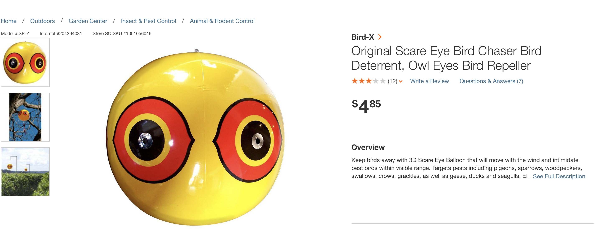
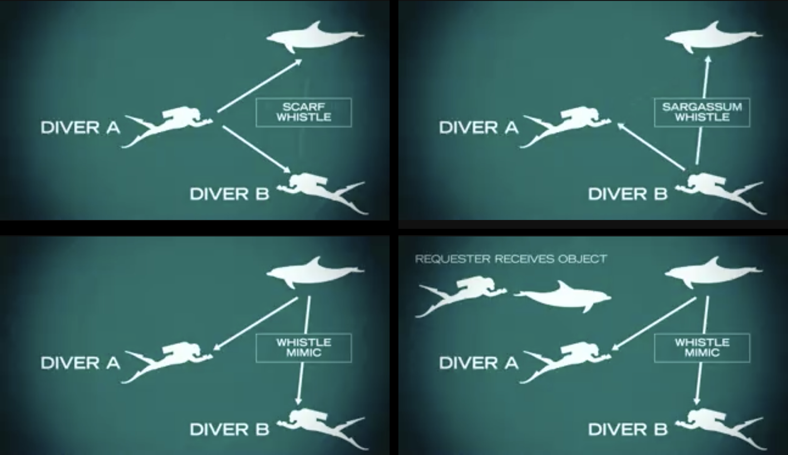
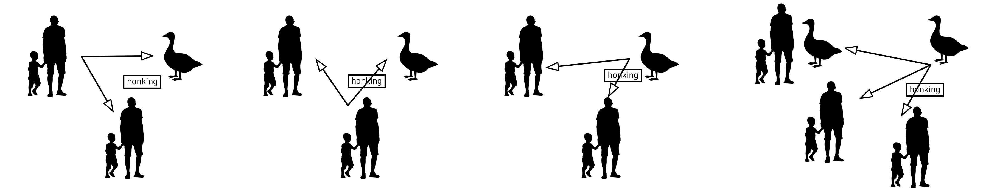

k // a
KAREN EL ASMAR
Week 12 & Week 13
Testing Prototypes:
Our Experiments for Canada Geese in the City
Team of 2
For the final project, I will be teaming up with Jerry Tan. After a in-depth field around NYC, we found that bees and other animals, which we chose as research objects, can hardly be found in the city. So we decided to keep working on the Canada Geese in the city, as an continuation work of our midterm project.
In-depth Research
After careful research, we found out that the geese of New York have lost their migratory instincts. These geese are known as “expansion teams” that have become established in areas far from their original territories. These newer populations have no such childhood memories. For this reason, we decided to continue working on our midterm project and continue the process we have already began.
Traffic System
The main point we explored for our midterm is related to traffic and the fact that geese cross the streets all the time. We decided to continue exploring this idea and focused further on the idea of repelling vs attracting.
Repelling
While researching, we found out that geese are repelled by 3 main things: reflective surfaces, “eyes” and a certain frequency of sound -- New York State Department of Environmental Conservation Division of Fish, Wildlife and Marine Resources and U.S. Department of Agriculture Animal and Plant Health Inspection Service.
To test our findings, we headed back to the site in Newport where we initially found these geese and rapidly prototyped some “devices” that would help us validate this.
Test 1: The Eyespot Balloon
Birds in general are afraid of eyespots as they believe that this “eye” belongs to another creature. This is why, for instance, butterflies have an “eyespot” on their wings.
Inspired from "geese repellent" balloons we found on the website of Home Depot, we decided to go their and buy this balloon. However, we were told that geese repellent tools are not found in downtown NY as “this problem does not exist here” and that if we go upstate, we might find what we’re looking for. This got us to think whether city geese are actually accustomed more to objects we see in our everyday environments and balloons, especially, are always found in parks where these geese would be found, too.

Nevertheless, to test this, we decided to inflate our own balloons and painted on them “eyes”. It was difficult to figure out a place to place this as there was so much wind and the geese were on the other side of the fence. However, we managed to wrap it around the fence and observed the geeses' reactions to it.
Our Findings
The geese did not respond to the balloon. They looked at it and did not seem to be afraid of it or had any reaction to it.

Test 2: Reflective Sheet
We also found that reflective surfaces largely repel birds and geese. People have found out many ways to use this idea such as placing disks on the trees as well as customized designs for this purpose.
What we had as a reflective surface was a sheet of reflective paper. We’re not sure if the quality of the experiment makes sense but we wanted to test what exactly about this reflective surface scares the geese away.
Our Findings
Not surprisingly, the geese were so not interested in what we were doing and seemed to continue doing whatever they were doing without even looking at us.
Test 3: Purse
After giving up, I reached out for my purse to get something. As soon as I opened my purse, we noticed a very weird thing: geese were approaching me and one of them was actually drooling. This was an extremely unplanned move and the fact that the geese actually had salive falling out of its mouth when I took a card out of my bag says so much about these geese: all they care about is FOOD and they are so used to being fed by people.
After not reaching anywhere with the repellent techniques, we decided to shift our focus to something else. While researching, we fell upon a video about communicating with dolphins. This seemed extremely interesting to us and sparked our following questions:
—— What if we could communicate with these geese using their own language?
—— What if we could use a more natural way to give them all these signs we were trying to create?
We decided to focus next on this idea and fell upon the work of The Cornell Lab of Ornithology. Specifically, we found a dataset of different sounds that geese make in different situations such as sounds they make when they call each other, call for a fight, in courtship, singing, flying, foraging etc.

Test 4: Geese Sounds
We worked on several different sounds. We got the Canada geese sound tracks from the macaulay library of the Cornell Lab of Ornithology. Surprisingly, the some of the sound tracks did trigger the related reactions of the Canada geese.
From all the different sounds, the geese responded most to the sound labeled as ”Duet: courtship” and "Fight song".
Further Development
Problems and Questions
— Based on observation, the Canada geese can percive the sound signals, but they can not find the source of the sound, which is a JBL Pulse put on the ground in this case. We are wondering whether it will be more effective if we provide a visual symbol to the source of the sound, which can be recognized by geese.
— Whether the geese language is uniform? Or the language is different among different families (flocks)?
Prototype 2